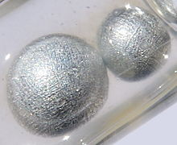

Potassium
| 
Potassium pearls under paraffin oil. The large pearl measures 0.5 cm.
|
|||||||||||||||||||||||||||||||||||||||||||||||||||||||||||||||||||||||||||||||||||||||||||||||||||||||||||||||||||||||||||||||||||||||||||||||||||||||||||||||||||||||||||||||||||||||||||||||||||||||||||||||||||||||||||||||||||||
|
Spectral lines of potassium
|
|||||||||||||||||||||||||||||||||||||||||||||||||||||||||||||||||||||||||||||||||||||||||||||||||||||||||||||||||||||||||||||||||||||||||||||||||||||||||||||||||||||||||||||||||||||||||||||||||||||||||||||||||||||||||||||||||||||
| General properties | |||||||||||||||||||||||||||||||||||||||||||||||||||||||||||||||||||||||||||||||||||||||||||||||||||||||||||||||||||||||||||||||||||||||||||||||||||||||||||||||||||||||||||||||||||||||||||||||||||||||||||||||||||||||||||||||||||||
|---|---|---|---|---|---|---|---|---|---|---|---|---|---|---|---|---|---|---|---|---|---|---|---|---|---|---|---|---|---|---|---|---|---|---|---|---|---|---|---|---|---|---|---|---|---|---|---|---|---|---|---|---|---|---|---|---|---|---|---|---|---|---|---|---|---|---|---|---|---|---|---|---|---|---|---|---|---|---|---|---|---|---|---|---|---|---|---|---|---|---|---|---|---|---|---|---|---|---|---|---|---|---|---|---|---|---|---|---|---|---|---|---|---|---|---|---|---|---|---|---|---|---|---|---|---|---|---|---|---|---|---|---|---|---|---|---|---|---|---|---|---|---|---|---|---|---|---|---|---|---|---|---|---|---|---|---|---|---|---|---|---|---|---|---|---|---|---|---|---|---|---|---|---|---|---|---|---|---|---|---|---|---|---|---|---|---|---|---|---|---|---|---|---|---|---|---|---|---|---|---|---|---|---|---|---|---|---|---|---|---|---|---|---|---|---|---|---|---|---|---|---|---|---|---|---|---|---|---|---|
| Name, symbol | potassium, K | ||||||||||||||||||||||||||||||||||||||||||||||||||||||||||||||||||||||||||||||||||||||||||||||||||||||||||||||||||||||||||||||||||||||||||||||||||||||||||||||||||||||||||||||||||||||||||||||||||||||||||||||||||||||||||||||||||||
| Pronunciation | /pɵˈtæsiəm/ po-TAS-ee-əm |
||||||||||||||||||||||||||||||||||||||||||||||||||||||||||||||||||||||||||||||||||||||||||||||||||||||||||||||||||||||||||||||||||||||||||||||||||||||||||||||||||||||||||||||||||||||||||||||||||||||||||||||||||||||||||||||||||||
| Appearance | silvery gray | ||||||||||||||||||||||||||||||||||||||||||||||||||||||||||||||||||||||||||||||||||||||||||||||||||||||||||||||||||||||||||||||||||||||||||||||||||||||||||||||||||||||||||||||||||||||||||||||||||||||||||||||||||||||||||||||||||||
| Potassium in the periodic table | |||||||||||||||||||||||||||||||||||||||||||||||||||||||||||||||||||||||||||||||||||||||||||||||||||||||||||||||||||||||||||||||||||||||||||||||||||||||||||||||||||||||||||||||||||||||||||||||||||||||||||||||||||||||||||||||||||||
|
|||||||||||||||||||||||||||||||||||||||||||||||||||||||||||||||||||||||||||||||||||||||||||||||||||||||||||||||||||||||||||||||||||||||||||||||||||||||||||||||||||||||||||||||||||||||||||||||||||||||||||||||||||||||||||||||||||||
| Atomic number | 19 | ||||||||||||||||||||||||||||||||||||||||||||||||||||||||||||||||||||||||||||||||||||||||||||||||||||||||||||||||||||||||||||||||||||||||||||||||||||||||||||||||||||||||||||||||||||||||||||||||||||||||||||||||||||||||||||||||||||
| Standard atomic weight (±) | 39.0983(1)[1] | ||||||||||||||||||||||||||||||||||||||||||||||||||||||||||||||||||||||||||||||||||||||||||||||||||||||||||||||||||||||||||||||||||||||||||||||||||||||||||||||||||||||||||||||||||||||||||||||||||||||||||||||||||||||||||||||||||||
| Element category | alkali metal | ||||||||||||||||||||||||||||||||||||||||||||||||||||||||||||||||||||||||||||||||||||||||||||||||||||||||||||||||||||||||||||||||||||||||||||||||||||||||||||||||||||||||||||||||||||||||||||||||||||||||||||||||||||||||||||||||||||
| Group, block | group 1 (alkali metals), s-block | ||||||||||||||||||||||||||||||||||||||||||||||||||||||||||||||||||||||||||||||||||||||||||||||||||||||||||||||||||||||||||||||||||||||||||||||||||||||||||||||||||||||||||||||||||||||||||||||||||||||||||||||||||||||||||||||||||||
| Period | period 4 | ||||||||||||||||||||||||||||||||||||||||||||||||||||||||||||||||||||||||||||||||||||||||||||||||||||||||||||||||||||||||||||||||||||||||||||||||||||||||||||||||||||||||||||||||||||||||||||||||||||||||||||||||||||||||||||||||||||
| Electron configuration | [Ar] 4s1 | ||||||||||||||||||||||||||||||||||||||||||||||||||||||||||||||||||||||||||||||||||||||||||||||||||||||||||||||||||||||||||||||||||||||||||||||||||||||||||||||||||||||||||||||||||||||||||||||||||||||||||||||||||||||||||||||||||||
| per shell | 2, 8, 8, 1 | ||||||||||||||||||||||||||||||||||||||||||||||||||||||||||||||||||||||||||||||||||||||||||||||||||||||||||||||||||||||||||||||||||||||||||||||||||||||||||||||||||||||||||||||||||||||||||||||||||||||||||||||||||||||||||||||||||||
| Physical properties | |||||||||||||||||||||||||||||||||||||||||||||||||||||||||||||||||||||||||||||||||||||||||||||||||||||||||||||||||||||||||||||||||||||||||||||||||||||||||||||||||||||||||||||||||||||||||||||||||||||||||||||||||||||||||||||||||||||
| Phase | solid | ||||||||||||||||||||||||||||||||||||||||||||||||||||||||||||||||||||||||||||||||||||||||||||||||||||||||||||||||||||||||||||||||||||||||||||||||||||||||||||||||||||||||||||||||||||||||||||||||||||||||||||||||||||||||||||||||||||
| Melting point | 336.7 K (63.5 °C, 146.3 °F) | ||||||||||||||||||||||||||||||||||||||||||||||||||||||||||||||||||||||||||||||||||||||||||||||||||||||||||||||||||||||||||||||||||||||||||||||||||||||||||||||||||||||||||||||||||||||||||||||||||||||||||||||||||||||||||||||||||||
| Boiling point | 1032 K (759 °C, 1398 °F) | ||||||||||||||||||||||||||||||||||||||||||||||||||||||||||||||||||||||||||||||||||||||||||||||||||||||||||||||||||||||||||||||||||||||||||||||||||||||||||||||||||||||||||||||||||||||||||||||||||||||||||||||||||||||||||||||||||||
| Density near r.t. | 0.862 g·cm−3 | ||||||||||||||||||||||||||||||||||||||||||||||||||||||||||||||||||||||||||||||||||||||||||||||||||||||||||||||||||||||||||||||||||||||||||||||||||||||||||||||||||||||||||||||||||||||||||||||||||||||||||||||||||||||||||||||||||||
| when liquid, at m.p. | 0.828 g·cm−3 | ||||||||||||||||||||||||||||||||||||||||||||||||||||||||||||||||||||||||||||||||||||||||||||||||||||||||||||||||||||||||||||||||||||||||||||||||||||||||||||||||||||||||||||||||||||||||||||||||||||||||||||||||||||||||||||||||||||
| Critical point | 2223 K, 16 MPa[2] | ||||||||||||||||||||||||||||||||||||||||||||||||||||||||||||||||||||||||||||||||||||||||||||||||||||||||||||||||||||||||||||||||||||||||||||||||||||||||||||||||||||||||||||||||||||||||||||||||||||||||||||||||||||||||||||||||||||
| Heat of fusion | 2.33 kJ·mol−1 | ||||||||||||||||||||||||||||||||||||||||||||||||||||||||||||||||||||||||||||||||||||||||||||||||||||||||||||||||||||||||||||||||||||||||||||||||||||||||||||||||||||||||||||||||||||||||||||||||||||||||||||||||||||||||||||||||||||
| Heat of vaporization | 76.9 kJ·mol−1 | ||||||||||||||||||||||||||||||||||||||||||||||||||||||||||||||||||||||||||||||||||||||||||||||||||||||||||||||||||||||||||||||||||||||||||||||||||||||||||||||||||||||||||||||||||||||||||||||||||||||||||||||||||||||||||||||||||||
| Molar heat capacity | 29.6 J·mol−1·K−1 | ||||||||||||||||||||||||||||||||||||||||||||||||||||||||||||||||||||||||||||||||||||||||||||||||||||||||||||||||||||||||||||||||||||||||||||||||||||||||||||||||||||||||||||||||||||||||||||||||||||||||||||||||||||||||||||||||||||
| Atomic properties | |||||||||||||||||||||||||||||||||||||||||||||||||||||||||||||||||||||||||||||||||||||||||||||||||||||||||||||||||||||||||||||||||||||||||||||||||||||||||||||||||||||||||||||||||||||||||||||||||||||||||||||||||||||||||||||||||||||
| Oxidation states | +1, −1 (a strongly basic oxide) | ||||||||||||||||||||||||||||||||||||||||||||||||||||||||||||||||||||||||||||||||||||||||||||||||||||||||||||||||||||||||||||||||||||||||||||||||||||||||||||||||||||||||||||||||||||||||||||||||||||||||||||||||||||||||||||||||||||
| Electronegativity | Pauling scale: 0.82 | ||||||||||||||||||||||||||||||||||||||||||||||||||||||||||||||||||||||||||||||||||||||||||||||||||||||||||||||||||||||||||||||||||||||||||||||||||||||||||||||||||||||||||||||||||||||||||||||||||||||||||||||||||||||||||||||||||||
| Ionization energies | 1st: 418.8 kJ·mol−1 2nd: 3052 kJ·mol−1 3rd: 4420 kJ·mol−1 (more) |
||||||||||||||||||||||||||||||||||||||||||||||||||||||||||||||||||||||||||||||||||||||||||||||||||||||||||||||||||||||||||||||||||||||||||||||||||||||||||||||||||||||||||||||||||||||||||||||||||||||||||||||||||||||||||||||||||||
| Atomic radius | empirical: 227 pm | ||||||||||||||||||||||||||||||||||||||||||||||||||||||||||||||||||||||||||||||||||||||||||||||||||||||||||||||||||||||||||||||||||||||||||||||||||||||||||||||||||||||||||||||||||||||||||||||||||||||||||||||||||||||||||||||||||||
| Covalent radius | 203±12 pm | ||||||||||||||||||||||||||||||||||||||||||||||||||||||||||||||||||||||||||||||||||||||||||||||||||||||||||||||||||||||||||||||||||||||||||||||||||||||||||||||||||||||||||||||||||||||||||||||||||||||||||||||||||||||||||||||||||||
| Van der Waals radius | 275 pm | ||||||||||||||||||||||||||||||||||||||||||||||||||||||||||||||||||||||||||||||||||||||||||||||||||||||||||||||||||||||||||||||||||||||||||||||||||||||||||||||||||||||||||||||||||||||||||||||||||||||||||||||||||||||||||||||||||||
| Miscellanea | |||||||||||||||||||||||||||||||||||||||||||||||||||||||||||||||||||||||||||||||||||||||||||||||||||||||||||||||||||||||||||||||||||||||||||||||||||||||||||||||||||||||||||||||||||||||||||||||||||||||||||||||||||||||||||||||||||||
| Crystal structure | body-centered cubic (bcc)
 |
||||||||||||||||||||||||||||||||||||||||||||||||||||||||||||||||||||||||||||||||||||||||||||||||||||||||||||||||||||||||||||||||||||||||||||||||||||||||||||||||||||||||||||||||||||||||||||||||||||||||||||||||||||||||||||||||||||
| Speed of sound thin rod | 2000 m·s−1 (at 20 °C) | ||||||||||||||||||||||||||||||||||||||||||||||||||||||||||||||||||||||||||||||||||||||||||||||||||||||||||||||||||||||||||||||||||||||||||||||||||||||||||||||||||||||||||||||||||||||||||||||||||||||||||||||||||||||||||||||||||||
| Thermal expansion | 83.3 µm·m−1·K−1 (at 25 °C) | ||||||||||||||||||||||||||||||||||||||||||||||||||||||||||||||||||||||||||||||||||||||||||||||||||||||||||||||||||||||||||||||||||||||||||||||||||||||||||||||||||||||||||||||||||||||||||||||||||||||||||||||||||||||||||||||||||||
| Thermal conductivity | 102.5 W·m−1·K−1 | ||||||||||||||||||||||||||||||||||||||||||||||||||||||||||||||||||||||||||||||||||||||||||||||||||||||||||||||||||||||||||||||||||||||||||||||||||||||||||||||||||||||||||||||||||||||||||||||||||||||||||||||||||||||||||||||||||||
| Electrical resistivity | 72 nΩ·m (at 20 °C) | ||||||||||||||||||||||||||||||||||||||||||||||||||||||||||||||||||||||||||||||||||||||||||||||||||||||||||||||||||||||||||||||||||||||||||||||||||||||||||||||||||||||||||||||||||||||||||||||||||||||||||||||||||||||||||||||||||||
| Magnetic ordering | paramagnetic[3] | ||||||||||||||||||||||||||||||||||||||||||||||||||||||||||||||||||||||||||||||||||||||||||||||||||||||||||||||||||||||||||||||||||||||||||||||||||||||||||||||||||||||||||||||||||||||||||||||||||||||||||||||||||||||||||||||||||||
| Young's modulus | 3.53 GPa | ||||||||||||||||||||||||||||||||||||||||||||||||||||||||||||||||||||||||||||||||||||||||||||||||||||||||||||||||||||||||||||||||||||||||||||||||||||||||||||||||||||||||||||||||||||||||||||||||||||||||||||||||||||||||||||||||||||
| Shear modulus | 1.3 GPa | ||||||||||||||||||||||||||||||||||||||||||||||||||||||||||||||||||||||||||||||||||||||||||||||||||||||||||||||||||||||||||||||||||||||||||||||||||||||||||||||||||||||||||||||||||||||||||||||||||||||||||||||||||||||||||||||||||||
| Bulk modulus | 3.1 GPa | ||||||||||||||||||||||||||||||||||||||||||||||||||||||||||||||||||||||||||||||||||||||||||||||||||||||||||||||||||||||||||||||||||||||||||||||||||||||||||||||||||||||||||||||||||||||||||||||||||||||||||||||||||||||||||||||||||||
| Mohs hardness | 0.4 | ||||||||||||||||||||||||||||||||||||||||||||||||||||||||||||||||||||||||||||||||||||||||||||||||||||||||||||||||||||||||||||||||||||||||||||||||||||||||||||||||||||||||||||||||||||||||||||||||||||||||||||||||||||||||||||||||||||
| Brinell hardness | 0.363 MPa | ||||||||||||||||||||||||||||||||||||||||||||||||||||||||||||||||||||||||||||||||||||||||||||||||||||||||||||||||||||||||||||||||||||||||||||||||||||||||||||||||||||||||||||||||||||||||||||||||||||||||||||||||||||||||||||||||||||
| CAS Registry Number | 7440-09-7 | ||||||||||||||||||||||||||||||||||||||||||||||||||||||||||||||||||||||||||||||||||||||||||||||||||||||||||||||||||||||||||||||||||||||||||||||||||||||||||||||||||||||||||||||||||||||||||||||||||||||||||||||||||||||||||||||||||||
| History | |||||||||||||||||||||||||||||||||||||||||||||||||||||||||||||||||||||||||||||||||||||||||||||||||||||||||||||||||||||||||||||||||||||||||||||||||||||||||||||||||||||||||||||||||||||||||||||||||||||||||||||||||||||||||||||||||||||
| Discovery and first isolation | Humphry Davy (1807) | ||||||||||||||||||||||||||||||||||||||||||||||||||||||||||||||||||||||||||||||||||||||||||||||||||||||||||||||||||||||||||||||||||||||||||||||||||||||||||||||||||||||||||||||||||||||||||||||||||||||||||||||||||||||||||||||||||||
| Most stable isotopes | |||||||||||||||||||||||||||||||||||||||||||||||||||||||||||||||||||||||||||||||||||||||||||||||||||||||||||||||||||||||||||||||||||||||||||||||||||||||||||||||||||||||||||||||||||||||||||||||||||||||||||||||||||||||||||||||||||||
|
|||||||||||||||||||||||||||||||||||||||||||||||||||||||||||||||||||||||||||||||||||||||||||||||||||||||||||||||||||||||||||||||||||||||||||||||||||||||||||||||||||||||||||||||||||||||||||||||||||||||||||||||||||||||||||||||||||||
{kind=link}
{kind=link}
Potassium is a chemical element with the symbol K (derived from Neo-Latin kalium) and atomic number 19. Elemental potassium is a soft silvery-white alkali metal that oxidizes rapidly in air and is very reactive with water, generating sufficient heat to ignite hydrogen emitted in the reaction and burning with a lilac flame. Naturally occurring potassium is composed of three isotopes, one of which, 40K, is radioactive. Traces (0.012%) of this isotope are found in all potassium, making 40K the most common radioisotope in the human body and in many biological materials, as well as in common building substances such as concrete.
Because potassium and sodium are chemically very similar, their salts were not at first differentiated. The existence of multiple elements in their salts was suspected in 1702,[4] and this was proven in 1807 when potassium and sodium were individually isolated from different salts by electrolysis. Potassium in nature occurs only in ionic salts. As such, it is found dissolved in seawater (which is 0.04% potassium by weight[5][6]), and is part of many minerals.
Most industrial chemical applications of potassium employ the relatively high solubility in water of potassium compounds, such as potassium soaps. Potassium metal has only a few special applications, being replaced in most chemical reactions with sodium metal.
Potassium ions are necessary for the function of all living cells. Potassium ion diffusion is a key mechanism in nerve transmission, and potassium depletion in animals, including humans, results in various cardiac dysfunctions. Potassium accumulates in plant cells, and thus fresh fruits and vegetables are a good dietary source of it. This resulted in potassium first being isolated from potash, the ashes of plants, giving the element its name. For the same reason, heavy crop production rapidly depletes soils of potassium, and agricultural fertilizers consume 95% of global potassium chemical production.[7] Conversely, plants are intolerant of sodium ions and thus sodium is present in only low concentrations, except specialist halophytes.
Contents
[hide]Properties[edit]
Physical[edit]
{kind=link}
Potassium is the second least dense metal after lithium. It is a soft solid that has a low melting point and can easily be cut with a knife. Freshly cut potassium is silvery in appearance, but it begins to tarnish toward gray immediately after being exposed to air.[8] In a flame test, potassium and its compounds emit a lilac color with a peak emission wavelength of 766.5 nm (see movie below).[9]
Chemical[edit]
Potassium atoms have 19 electrons, which is one more than the extremely stable configuration of the noble gas argon. Because of this and its low first ionization energy of 418.8 kJ/mol, the potassium atom is thus much more likely to lose the "extra" electron, acquiring a positive charge, than to gain one and acquire a negative charge; (however, such negatively charged alkalide ions (K−) are known.[10][11]) This process requires so little energy that potassium is readily oxidized by atmospheric oxygen. In contrast, the second ionization energy is very high (3052 kJ/mol), because removal of two electrons breaks the stable noble gas electronic configuration (the configuration of the inert argon).[11] Potassium therefore does not readily form compounds with the oxidation state of +2 or higher.[10]
Potassium is an extremely active metal, which reacts violently with oxygen and water in air. With oxygen it forms potassium peroxide, and with water potassium forms potassium hydroxide. The reaction of potassium with water is dangerous because of its violent exothermic character and the production of hydrogen gas. Hydrogen reacts again with atmospheric oxygen, producing water, which reacts with the remaining potassium. This reaction requires only traces of water; because of this, potassium and its liquid alloy with sodium — NaK — are potent desiccants that can be used to dry solvents prior to distillation.[12]
Because of the sensitivity of potassium to water and air, reactions with other elements are possible only in inert atmosphere, such as argon gas using air-free techniques. Potassium does not react with most hydrocarbons such as mineral oil or kerosene.[13] It readily dissolves in liquid ammonia, up to 480 g per 1000 g of ammonia at 0 °C. Depending on the concentration, the ammonia solutions are blue to yellow, and their electrical conductivity is similar to that of liquid metals. In a pure solution, potassium slowly reacts with ammonia to form KNH2, but this reaction is accelerated by minute amounts of transition metal salts.[14] Because it can reduce the salts to the metal, potassium is often used as the reductant in the preparation of finely divided metals from their salts by the Rieke method.[15] For example, the preparation of Rieke magnesium employs potassium as the reductant:
- MgCl2 + 2 K → Mg + 2 KCl
Energy levels[edit]
All alkali metals are similar in this respect: see Zeeman effect for more information.
Compounds[edit]
The only common oxidation state for potassium is +1. Potassium metal is a powerful reducing agent that is easily oxidized to the monopositive cation, K+. Once oxidized, it is very stable and difficult to reduce back to the metal.[10]
Potassium hydroxide reacts readily with carbon dioxide to produce potassium carbonate, and is used to remove traces of the gas from air. In general, potassium compounds have excellent water solubility, owing to the high hydration energy of the K+ ion. The potassium ion is colorless in water and is very difficult to precipitate; possible precipitation methods include reactions with sodium tetraphenylborate, hexachloroplatinic acid, and sodium cobaltinitrite.[13]
Potassium oxidizes faster than most metals and forms oxides with oxygen-oxygen bonds, as do all alkali metals except lithium. Three species are formed during the reaction: potassium oxide, potassium peroxide, and potassium superoxide,[16] which contain three different oxygen-based ions: oxide (O2−
), peroxide (O2−
2), and superoxide (O−
2). The last two species, especially the superoxide, are rare and are formed only in reaction with very electropositive metals; these species contain oxygen-oxygen bonds.[14] All potassium-oxygen binary compounds are known to react with water violently, forming potassium hydroxide. This compound is a very strong alkali, and 1.21 kg of it can dissolve in as little as a liter of water.[17][18]
{kind=link}
In aqueous solution[edit]
Potassium compounds are typically highly ionic and thus most of them are soluble in water. The main species in water are the aquated complexes [K(H2O)n]+ where n = 6 and 7.[19] Some of the few poorly soluble potassium salts include potassium tetraphenylborate, potassium hexachloroplatinate, and potassium cobaltinitrite.[13]
Isotopes[edit]
There are 24 known isotopes of potassium, three of which occur naturally: 39K (93.3%), 40K (0.0117%), and 41K (6.7%). Naturally occurring 40K has a half-life of 1.250×109 years. It decays to stable 40Ar by electron capture or positron emission (11.2%) or to stable 40Ca by beta decay (88.8%).[20] The decay of 40K to 40Ar enables a commonly used method for dating rocks. The conventional K-Ar dating method depends on the assumption that the rocks contained no argon at the time of formation and that all the subsequent radiogenic argon (i.e., 40Ar) was quantitatively retained. Minerals are dated by measurement of the concentration of potassium and the amount of radiogenic 40Ar that has accumulated. The minerals that are best suited for dating include biotite, muscovite, metamorphic hornblende, and volcanic feldspar; whole rock samples from volcanic flows and shallow instrusives can also be dated if they are unaltered.[20][21] Outside of dating, potassium isotopes have been used as tracers in studies of weathering and for nutrient cycling studies because potassium is a macronutrient required for life.[22]
40K occurs in natural potassium (and thus in some commercial salt substitutes) in sufficient quantity that large bags of those substitutes can be used as a radioactive source for classroom demonstrations. 40K is the radioisotope with the largest abundance in the body. In healthy animals and people, 40K represents the largest source of radioactivity, greater even than 14C. In a human body of 70 kg mass, about 4,400 nuclei of 40K decay per second.[23] The activity of natural potassium is 31 Bq/g.[24]
Creation and occurrence[edit]
{kind=link}
Potassium is formed in the universe by nucleosynthesis from lighter atoms. Potassium is principally created in Type II supernovas via the explosive oxygen-burning process.[25] 40K is also formed in s-process nucleosynthesis and the neon burning process.[citation needed]
Elemental potassium does not occur in nature because of its high reactivity. It reacts violently with water (see section Precautions below)[13] and also reacts with oxygen. In its various compounds, potassium makes up about 2.6% of the weight of the Earth's crust and is the seventh most abundant element, similar in abundance to sodium at approximately 1.8% of the crust.[26] It is the 17th most abundant element by weight in the entire planet and 20th most abundant in the Solar System. The potassium concentration in seawater is 0.39 g/L[5] (0.039 wt/v%), far less abundant than sodium at 10.8 g/L (1.08 wt/v%).[27][28]
Orthoclase (potassium feldspar) is a common rock-forming mineral. Granite for example contains 5% potassium, which is well above the average in the Earth's crust. Sylvite (KCl), carnallite (KCl·MgCl2·6(H2O)), kainite (MgSO4·KCl·3H2O) and langbeinite (MgSO4·K2SO4) are the minerals found in large evaporite deposits worldwide. The deposits often show layers starting with the least soluble at the bottom and the most soluble on top.[28] Deposits of niter (potassium nitrate) are formed by decomposition of organic material in contact with atmosphere, mostly in caves; because of the good water solubility of niter the formation of larger deposits requires special environmental conditions.[29]
History[edit]
Neither elemental potassium nor potassium salts (as separate entities from other salts) were known in Roman times, and the Latin name of the element, kalium, is not Classical Latin but rather neo-Latin. Kalium was taken from the word "alkali", which in turn came from Arabic: القَلْيَه al-qalyah "plant ashes." The similar-sounding English term alkali is from this same root, whereas the word for potassium in Modern Standard Arabic is بوتاسيوم būtāsyūm.
{kind=link}
The English name for the element potassium comes from the word "potash",[30] and refers to the method by which potash was obtained – leaching the ash of burnt wood or tree leaves and evaporating the solution in a pot. Potash is primarily a mixture of potassium salts because plants have little or no sodium content, and the rest of a plant's major mineral content consists of calcium salts of relatively low solubility in water. While potash has been used since ancient times, it was not understood for most of its history to be a fundamentally different substance from sodium mineral salts. Georg Ernst Stahl obtained experimental evidence that led him to suggest the fundamental difference of sodium and potassium salts in 1702,[4] and Henri Louis Duhamel du Monceau was able to prove this difference in 1736.[31] The exact chemical composition of potassium and sodium compounds, and the status as chemical element of potassium and sodium, was not known then, and thus Antoine Lavoisier did not include the alkali in his list of chemical elements in 1789.[32][33]
Potassium metal was first isolated in 1807 in England by Sir Humphry Davy, who derived it from caustic potash (KOH, potassium hydroxide) by the use of electrolysis of the molten salt with the newly discovered voltaic pile. Potassium was the first metal that was isolated by electrolysis.[34] Later in the same year, Davy reported extraction of the metal sodium from a mineral derivative (caustic soda, NaOH, or lye) rather than a plant salt, by a similar technique, demonstrating that the elements, and thus the salts, are different.[32][33][35][36] Although the production of potassium and sodium metal should have shown that both are elements, it took some time before this view was universally accepted.[33]
For a long time the only significant applications for potash were the production of glass, bleach, soap and gunpowder as potassium nitrate.[37] Potassium soaps from animal fats and vegetable oils were especially prized, as they tended to be more water-soluble and of softer texture, and were known as soft soaps.[7] The discovery by Justus Liebig in 1840 that potassium is a necessary element for plants and that most types of soil lack potassium[38] caused a steep rise in demand for potassium salts. Wood-ash from fir trees was initially used as a potassium salt source for fertilizer, but, with the discovery in 1868 of mineral deposits containing potassium chloride near Staßfurt, Germany, the production of potassium-containing fertilizers began at an industrial scale.[39][40][41] Other potash deposits were discovered, and by the 1960s Canada became the dominant producer.[42][43]
Commercial production[edit]
{kind=link}
Potassium salts such as carnallite, langbeinite, polyhalite, and sylvite form extensive deposits in ancient lake bottoms and seabeds,[27] making extraction of potassium salts in these environments commercially viable. The principal source of potassium – potash – is mined in Canada, Russia, Belarus, Germany, Israel, United States, Jordan, and other places around the world.[44][45][46] The first mined deposits were located near Staßfurt, Germany, but the deposits span from Great Britain over Germany into Poland. They are located in the Zechstein and were deposited in the Middle to Late Permian. The largest deposits ever found lie 1,000 meters (3,300 feet) below the surface of the Canadian province of Saskatchewan. The deposits are located in the Elk Point Group produced in the Middle Devonian. Saskatchewan, where several large mines have operated since the 1960s, pioneered the use of freezing of wet sands (the Blairmore formation) in order to drive mine shafts through them. The main potash mining company in Saskatchewan is the Potash Corporation of Saskatchewan.[47] The water of the Dead Sea is used by Israel and Jordan as a source for potash, while the concentration in normal oceans is too low for commercial production at current prices.[45][46]
{kind=link}
Several methods are applied to separate the potassium salts from the present sodium and magnesium compounds. The most-used method is to precipitate some compounds relying on the solubility difference of the salts at different temperatures. Electrostatic separation of the ground salt mixture is also used in some mines. The resulting sodium and magnesium waste is either stored underground or piled up in slag heaps. Most of the mined potassium minerals end up as potassium chloride after processing. The mineral industry refers to potassium chloride either as potash, muriate of potash, or simply MOP.[28]
Pure potassium metal can be isolated by electrolysis of its hydroxide in a process that has changed little since Davy. Although the electrolysis process was developed and used in industrial scale in the 1920s the thermal method by reacting sodium with potassium chloride in a chemical equilibrium reaction became the dominant method in the 1950s. The production of sodium potassium alloys is possible by changing the reaction time and the amount of sodium used in the reaction. The Griesheimer process employing the reaction of potassium fluoride with calcium carbide was also used to produce potassium.[28][48]
- Na + KCl → NaCl + K (Thermal method)
- 2 KF + CaC2 → 2 K + CaF2 + 2 C (Griesheimer process)
Reagent-grade potassium metal cost about $10.00/pound ($22/kg) in 2010 when purchased in tonne quantities. Lower purity metal is considerably cheaper. The market is volatile due to the difficulty of the long-term storage of the metal. It must be stored under a dry inert gas atmosphere or anhydrous mineral oil to prevent the formation of a surface layer of potassium superoxide. This superoxide is a pressure-sensitive explosive that will detonate when scratched. The resulting explosion will usually start a fire that is difficult to extinguish.[49][50]
Biological role[edit]
Biochemical function[edit]
{kind=link}
Potassium is the eighth or ninth most common element by mass (0.2%) in the human body, so that a 60 kg adult contains a total of about 120 g of potassium.[51] The body has about as much potassium as sulfur and chlorine, and only the major minerals calcium and phosphorus are more abundant.[52]
Potassium cations are important in neuron (brain and nerve) function, and in influencing osmotic balance between cells and the interstitial fluid, with their distribution mediated in all animals (but not in all plants) by the so-called Na+/K+-ATPase pump.[53] This ion pump uses ATP to pump three sodium ions out of the cell and two potassium ions into the cell, thus creating an electrochemical gradient over the cell membrane. In addition, the highly selective potassium ion channels (which are tetramers) are crucial for hyperpolarization, for example inside neurons, after an action potential is fired. The most recently resolved potassium ion channel is KirBac3.1, which gives a total of five potassium ion channels (KcsA, KirBac1.1, KirBac3.1, KvAP, and MthK) with a determined structure.[54] All five are from prokaryotic species.
Potassium can be detected by taste because it triggers three of the five types of taste sensations, according to concentration. Dilute solutions of potassium ions taste sweet, allowing moderate concentrations in milk and juices, while higher concentrations become increasingly bitter/alkaline, and finally also salty to the taste. The combined bitterness and saltiness of high-potassium solutions makes high-dose potassium supplementation by liquid drinks a palatability challenge.[55][56]
Membrane polarization[edit]
Potassium is also important in preventing muscle contraction and the sending of all nerve impulses in animals through action potentials. By nature of their electrostatic and chemical properties, K+ ions are larger than Na+ ions, and ion channels and pumps in cell membranes can distinguish between the two types of ions, actively pumping or passively allowing one of the two ions to pass, while blocking the other.[57]
A shortage of potassium in body fluids may cause a potentially fatal condition known as hypokalemia, typically resulting from vomiting, diarrhea, and/or increased diuresis.[58] Deficiency symptoms include muscle weakness, paralytic ileus, ECG abnormalities, decreased reflex response and in severe cases respiratory paralysis, alkalosis and cardiac arrhythmia.[59]
Filtration and excretion[edit]
Potassium is an essential macromineral in human nutrition; it is the major cation (positive ion) inside animal cells, and it is thus important in maintaining fluid and electrolyte balance in the body. Sodium makes up most of the cations of blood plasma at a reference range of about 145 mmol/L (3.345 g)(1 mmol/L = 1mEq/L), and potassium makes up most of the cell fluid cations at about 150 mmol/L (4.8 g). Plasma is filtered through the glomerulus of the kidneys in enormous amounts, about 180 liters per day.[60] Thus 602 g of sodium and 33 g of potassium are filtered each day. All but the 1–10 g of sodium and the 1–4 g of potassium likely to be in the diet must be reabsorbed. Sodium must be reabsorbed in such a way as to keep the blood volume exactly right and the osmotic pressure correct; potassium must be reabsorbed in such a way as to keep serum concentration as close as possible to 4.8 mmol/L (about 0.190 g/L).[61] Sodium pumps in the kidneys must always operate to conserve sodium. Potassium must sometimes be conserved also, but, as the amount of potassium in the blood plasma is very small and the pool of potassium in the cells is about thirty times as large, the situation is not so critical for potassium. Since potassium is moved passively[62][63] in counter flow to sodium in response to an apparent (but not actual) Donnan equilibrium,[64] the urine can never sink below the concentration of potassium in serum except sometimes by actively excreting water at the end of the processing. Potassium is secreted twice and reabsorbed three times before the urine reaches the collecting tubules.[65] At that point, it usually has about the same potassium concentration as plasma. At the end of the processing, potassium is secreted one more time if the serum levels are too high.
If potassium were removed from the diet, there would remain a minimum obligatory kidney excretion of about 200 mg per day when the serum declines to 3.0–3.5 mmol/L in about one week,[66] and can never be cut off completely, resulting in hypokalemia and even death.[67]
The potassium moves passively through pores in the cell membrane. When ions move through pumps there is a gate in the pumps on either side of the cell membrane and only one gate can be open at once. As a result, approximately 100 ions are forced through per second. Pores have only one gate, and there only one kind of ion can stream through, at 10 million to 100 million ions per second.[68] The pores require calcium in order to open[69] although it is thought that the calcium works in reverse by blocking at least one of the pores.[70] Carbonyl groups inside the pore on the amino acids mimic the water hydration that takes place in water solution[71] by the nature of the electrostatic charges on four carbonyl groups inside the pore.[72]
In diet[edit]
Deficiency[edit]
Diets low in potassium lead to hypertension.[73]
Adequate intake[edit]
A potassium intake sufficient to support life can in general be guaranteed by eating a variety of foods. Foods rich in potassium include yam, parsley, dried apricots, dried milk, chocolate, various nuts (especially almonds and pistachios), potatoes, bamboo shoots, bananas, avocados, coconut water, soybeans, and bran, although it is also present in sufficient quantities in most fruits, vegetables, meat and fish.[74]
Optimal intake[edit]
Epidemiological studies and studies in animals subject to hypertension indicate that diets high in potassium can reduce the risk of hypertension and possibly stroke (by a mechanism independent of blood pressure), and a potassium deficiency combined with an inadequate thiamine intake has produced heart disease in rats.[75] There is some debate regarding the optimal amount of dietary potassium. For example, the 2004 guidelines of the Institute of Medicine specify a DRI of 4,700 mg of potassium (100 mEq), though most Americans consume only half that amount per day, which would make them formally deficient as regards this particular recommendation.[76][77] Likewise, in the European Union, in particular in Germany and Italy, insufficient potassium intake is somewhat common.[78] Italian researchers reported in a 2011 meta-analysis that a 1.64 g higher daily intake of potassium was associated with a 21% lower risk of stroke.[79]
Medical supplementation and disease[edit]
Supplements of potassium in medicine are most widely used in conjunction with loop diuretics and thiazides, classes of diuretics that rid the body of sodium and water, but have the side-effect of also causing potassium loss in urine. A variety of medical and non-medical supplements such as bicarbonate of potassium are available. Potassium salts such as potassium chloride may be dissolved in water, but the salty/bitter taste of high concentrations of potassium ion make palatable high concentration liquid supplements difficult to formulate.[55] Typical medical supplemental doses range from 10 mmol (400 mg, about equal to a cup of milk or 6 US fl oz (180 ml). of orange juice) to 20 mmol (800 mg) per dose. Potassium salts are also available in tablets or capsules, which for therapeutic purposes are formulated to allow potassium to leach slowly out of a matrix, as very high concentrations of potassium ion (which might occur next to a solid tablet of potassium chloride) can kill tissue, and cause injury to the gastric or intestinal mucosa. For this reason, non-prescription supplement potassium pills are limited by law in the US to only 99 mg of potassium.
Individuals suffering from kidney diseases may suffer adverse health effects from consuming large quantities of dietary potassium. End stage renal failure patients undergoing therapy by renal dialysis must observe strict dietary limits on potassium intake, as the kidneys control potassium excretion, and buildup of blood concentrations of potassium (hyperkalemia) may trigger fatal cardiac arrhythmia. [80]
Applications[edit]
Fertilizer[edit]
{kind=link}
Potassium ions are an essential component of plant nutrition and are found in most soil types.[7] They are used as a fertilizer in agriculture, horticulture, and hydroponic culture in the form of chloride (KCl), sulfate (K
2SO
4), or nitrate (KNO
3). Agricultural fertilizers consume 95% of global
potassium chemical production, and about 90% of this potassium is
supplied as KCl.[7]
The potassium content of most plants range from 0.5% to 2% of the
harvested weight of crops, conventionally expressed as amount of K
2O. Modern high-yield
agriculture depends upon fertilizers to replace the potassium lost at
harvest. Most agricultural fertilizers contain potassium chloride, while
potassium sulfate is used for chloride-sensitive crops or crops needing
higher sulfur content. The sulfate is produced mostly by decomposition
of the complex minerals kainite (MgSO4·KCl·3H2O) and langbeinite (MgSO4·K2SO4). Only a very few fertilizers contain potassium nitrate.[81] In 2005, about 93% of world potassium production was consumed by the fertilizer industry.[46]
Food[edit]
The potassium cation is a nutrient necessary for human life and health. Potassium chloride and bicarbonate are used by those seeking to control hypertension.[82] The USDA lists tomato paste, orange juice, beet greens, white beans, potatoes, bananas and many other dietary sources of potassium, ranked in descending order according to potassium content.[83]
Potassium sodium tartrate (KNaC4H4O6, Rochelle salt) is the main constituent of baking powder; it is also used in the silvering of mirrors. Potassium bromate (KBrO
3) is a strong oxidizer (E924), used to improve dough strength and rise height. Potassium bisulfite (KHSO
3) is used as a food preservative, for example in wine and beer-making (but not in meats). It is also used to bleach textiles and straw, and in the tanning of leathers.[84][85]
Industrial[edit]
Major potassium chemicals are potassium hydroxide, potassium carbonate, potassium sulfate, and potassium chloride. Megatons of these compounds are produced annually.[86]
Potassium hydroxide KOH is a strong base, which is used in industry to neutralize strong and weak acids, to control pH and to manufacture potassium salts. It is also used to saponify fats and oils, in industrial cleaners, and in hydrolysis reactions, for example of esters.[87][88]
Potassium nitrate (KNO3) or saltpeter is obtained from natural sources such as guano and evaporites or manufactured via the Haber process; it is the oxidant in gunpowder (black powder) and an important agricultural fertilizer. Potassium cyanide (KCN) is used industrially to dissolve copper and precious metals, in particular silver and gold, by forming complexes. Its applications include gold mining, electroplating, and electroforming of these metals; it is also used in organic synthesis to make nitriles. Potassium carbonate (K
2CO
3 or potash) is used in the manufacture of glass, soap, color TV tubes, fluorescent lamps, textile dyes and pigments.[89] Potassium permanganate (KMnO4) is an oxidizing, bleaching and purification substance and is used for production of saccharin. Potassium chlorate (KClO3) is added to matches and explosives. Potassium bromide (KBr) was formerly used as a sedative and in photography.[7]
Potassium chromate (K2CrO4) is used in inks, dyes, stains (bright yellowish-red color); in explosives and fireworks; in the tanning of leather, in fly paper and safety matches,[90] but all these uses are due to the properties of chromate ion containment rather than potassium ions.
Niche uses[edit]
Potassium compounds are so pervasive that thousands of small uses are in place. The superoxide KO2 is an orange solid that acts as a portable source of oxygen and a carbon dioxide absorber. It is widely used in respiration systems in mines, submarines and spacecraft as it takes less volume than the gaseous oxygen.[91][92]
- 4 KO2 + 2 CO2 → 2 K2CO3 + 3 O2
Potassium cobaltinitrite K3[Co(NO2)6] is used as artist's pigment under the name of Aureolin or Cobalt Yellow.[93]
Laboratory uses[edit]
An alloy of sodium and potassium, NaK is a liquid used as a heat-transfer medium and a desiccant for producing dry and air-free solvents. It can also be used in reactive distillation.[94] The ternary alloy of 12% Na, 47% K and 41% Cs has the lowest melting point of −78 °C of any metallic compound.[8]
Metallic potassium is used in several types of magnetometers.[95]
Precautions[edit]
Potassium metal reacts very violently with water producing potassium hydroxide (KOH) and hydrogen gas.
- 2 K (s) + 2 H2O (l) → 2 KOH (aq) + H2↑ (g)
This reaction is exothermic and releases enough heat to ignite the resulting hydrogen. It in turn may explode in the presence of oxygen. Potassium hydroxide is a strong alkali that causes skin burns. Finely divided potassium will ignite in air at room temperature. The bulk metal will ignite in air if heated. Because its density is 0.89 g/cm3, burning potassium floats in water that exposes it to atmospheric oxygen. Many common fire extinguishing agents, including water, either are ineffective or make a potassium fire worse. Nitrogen, argon, sodium chloride (table salt), sodium carbonate (soda ash), and silicon dioxide (sand) are effective if they are dry. Some Class D dry powder extinguishers designed for metal fires are also effective. These agents deprive the fire of oxygen and cool the potassium metal.[96]
Potassium reacts violently with halogens and will detonate in the presence of bromine. It also reacts explosively with sulfuric acid. During combustion potassium forms peroxides and superoxides. These peroxides may react violently with organic compounds such as oils. Both peroxides and superoxides may react explosively with metallic potassium.[97]
Because potassium reacts with water vapor present in the air, it is usually stored under anhydrous mineral oil or kerosene. Unlike lithium and sodium, however, potassium should not be stored under oil for longer than 6 months, unless in an inert (oxygen free) atmosphere, or under vacuum. After prolonged storage in air dangerous shock-sensitive peroxides can form on the metal and under the lid of the container, and can detonate upon opening.[98]
Because of the highly reactive nature of potassium metal, it must be handled with great care, with full skin and eye protection and preferably an explosion-resistant barrier between the user and the metal. Ingestion of large amounts of potassium compounds can lead to hyperkalemia strongly influencing the cardiovascular system.[99][100] Potassium chloride is used in the United States for executions via lethal injection.[99]
See also[edit]
References[edit]
- Jump up ^ Standard Atomic Weights 2013. Commission on Isotopic Abundances and Atomic Weights
- Jump up ^ Haynes, William M., ed. (2011). CRC Handbook of Chemistry and Physics (92nd ed.). Boca Raton, FL: CRC Press. p. 4.122. ISBN 1439855110.
- Jump up ^ Magnetic susceptibility of the elements and inorganic compounds, in Lide, D. R., ed. (2005). CRC Handbook of Chemistry and Physics (86th ed.). Boca Raton (FL): CRC Press. ISBN 0-8493-0486-5.
- ^ Jump up to: a b Marggraf, Andreas Siegmund (1761). Chymische Schriften. p. 167.
- ^ Jump up to: a b Webb, D. A. (April 1939). "The Sodium and Potassium Content of Sea Water" (PDF). The Journal of Experimental Biology: 183.
- Jump up ^ Anthoni, J. (2006). "Detailed composition of seawater at 3.5% salinity". seafriends.org.nz. Retrieved 2011-09-23.
- ^ Jump up to: a b c d e Greenwood, p. 73
- ^ Jump up to: a b Greenwood, p. 76
- Jump up ^ Greenwood, p. 75
- ^ Jump up to: a b c Dye, J. L. (1979). "Compounds of Alkali Metal Anions". Angewandte Chemie International Edition 18 (8): 587–598. doi:10.1002/anie.197905871.
- ^ Jump up to: a b James, A. M.; Lord, M. P. (1992). Macmillan's chemical and physical data. London: Macmillan. ISBN 0-333-51167-0.
- Jump up ^ Burkhardt, p. 35
- ^ Jump up to: a b c d Holleman, Arnold F.; Wiberg, Egon; Wiberg, Nils (1985). "Potassium". Lehrbuch der Anorganischen Chemie (in German) (91–100 ed.). Walter de Gruyter. ISBN 3-11-007511-3.
- ^ Jump up to: a b Burkhardt, p. 32
- Jump up ^ Rieke, R. D. (1989). "Preparation of Organometallic Compounds from Highly Reactive Metal Powders". Science 246 (4935): 1260–1264. Bibcode:1989Sci...246.1260R. doi:10.1126/science.246.4935.1260. PMID 17832221.
- Jump up ^ Lide, David R. (1998). Handbook of Chemistry and Physics (87th ed.). Boca Raton, Florida, United States: CRC Press. pp. 477; 520. ISBN 0-8493-0594-2.
- Jump up ^ Lide, D. R., ed. (2005). CRC Handbook of Chemistry and Physics (86th ed.). Boca Raton (FL): CRC Press. p. 4–80. ISBN 0-8493-0486-5.
- Jump up ^ Schultz, p. 94
- Jump up ^ Lincoln, S. F.; Richens, D. T. and Sykes, A. G. "Metal Aqua Ions" in J. A. McCleverty and T. J. Meyer (eds.) Comprehensive Coordination Chemistry II, Vol. 1, pp. 515–555, ISBN 978-0-08-043748-4.
- ^ Jump up to: a b Georges, Audi; Bersillon, O.; Blachot, J.; Wapstra, A.H. (2003). "The NUBASE Evaluation of Nuclear and Decay Properties". Nuclear Physics A (Atomic Mass Data Center) 729: 3–128. Bibcode:2003NuPhA.729....3A. doi:10.1016/j.nuclphysa.2003.11.001.
- Jump up ^ Bowen, Robert; Attendorn, H. G. (1988). "Theory and Assumptions in Potassium–Argon Dating". Isotopes in the Earth Sciences. Springer. pp. 203–208. ISBN 978-0-412-53710-3.
- Jump up ^ Anaç, D. & Martin-Prével, P. (1999). Improved crop quality by nutrient management. Springer. pp. 290–. ISBN 978-0-7923-5850-3.
- Jump up ^ "Radiation and Radioactive Decay. Radioactive Human Body". Harvard Natural Sciences Lecture Demonstrations. Retrieved 2011-05-18.
- Jump up ^ Winteringham, F. P. W; Effects, F.A.O. Standing Committee on Radiation, Land And Water Development Division, Food and Agriculture Organization of the United Nations (1989). Radioactive fallout in soils, crops and food: a background review. Food & Agriculture Org. p. 32. ISBN 978-92-5-102877-3.
- Jump up ^ Shimansky, V.; Bikmaev, I. F.; Galeev, A. I.; Shimanskaya, N. N. et al. (September 2003). "Observational constraints on potassium synthesis during the formation of stars of the Galactic disk". Astronomy Reports 47 (9): 750. Bibcode:2003ARep...47..750S. doi:10.1134/1.1611216.
- Jump up ^ Greenwood, p. 69
- ^ Jump up to: a b Micale, Giorgio; Cipollina, Andrea; Rizzuti, Lucio (2009). Seawater Desalination: Conventional and Renewable Energy Processes. Springer. p. 3. ISBN 978-3-642-01149-8.
- ^ Jump up to: a b c d Prud'homme, Michel; Krukowski, Stanley T. (2006). "Potash". Industrial minerals & rocks: commodities, markets, and uses. Society for Mining, Metallurgy, and Exploration. pp. 723–740. ISBN 978-0-87335-233-8.
- Jump up ^ Ross, William H. (1914). "The Origin of Nitrate Deposits". Popular Science. Bonnier Corporation. pp. 134–145.
- Jump up ^ Davy, Humphry (1808). "On some new phenomena of chemical changes produced by electricity, in particular the decomposition of the fixed alkalies, and the exhibition of the new substances that constitute their bases; and on the general nature of alkaline bodies". Philosophical Transactions of the Royal Society 98: 32. doi:10.1098/rstl.1808.0001.
- Jump up ^ du Monceau, H. L. D. (1702–1797). "Sur la Base de Sel Marine". Memoires de l'Academie royale des Sciences (in French): 65–68.
- ^ Jump up to: a b Weeks, Mary Elvira (1932). "The discovery of the elements. IX. Three alkali metals: Potassium, sodium, and lithium". Journal of Chemical Education 9 (6): 1035. Bibcode:1932JChEd...9.1035W. doi:10.1021/ed009p1035.
- ^ Jump up to: a b c Siegfried, R. (1963). "The Discovery of Potassium and Sodium, and the Problem of the Chemical Elements". Isis 54 (2): 247–258. doi:10.1086/349704. JSTOR 228541.
- Jump up ^ Enghag, P. (2004). "11. Sodium and Potassium". Encyclopedia of the elements. Wiley-VCH Weinheim. ISBN 3-527-30666-8.
- Jump up ^ Davy, Humphry (1808). "On some new phenomena of chemical changes produced by electricity, in particular the decomposition of the fixed alkalies, and the exhibition of the new substances that constitute their bases; and on the general nature of alkaline bodies". Philosophical Transactions of the Royal Society 98: 1–44. doi:10.1098/rstl.1808.0001.
- Jump up ^ Shaposhnik, V. A. (2007). "History of the discovery of potassium and sodium (on the 200th anniversary of the discovery of potassium and sodium)". Journal of Analytical Chemistry 62 (11): 1100–1102. doi:10.1134/S1061934807110160.
- Jump up ^ Browne, C. A. (1926). "Historical notes upon the domestic potash industry in early colonial and later times". Journal of Chemical Education 3 (7): 749–756. Bibcode:1926JChEd...3..749B. doi:10.1021/ed003p749.
- Jump up ^ Liebig, Justus von (1840). Die organische Chemie in ihrer Anwendung auf Agricultur und Physiologie (in German).
- Jump up ^ Cordel, Oskar (1868). Die Stassfurter Kalisalze in der Landwirthschalt: Eine Besprechung ... (in German). L. Schnock.
- Jump up ^ Birnbaum, Karl (1869). Die Kalidüngung in ihren Vortheilen und Gefahren (in German).
- Jump up ^ United Nations Industrial Development Organization and Int'l Fertilizer Development Center (1998). Fertilizer Manual. pp. 46, 417. ISBN 978-0-7923-5032-3.
- Jump up ^ Miller, H. (1980). "Potash from Wood Ashes: Frontier Technology in Canada and the United States". Technology and Culture 21 (2): 187–208. doi:10.2307/3103338. JSTOR 3103338.
- Jump up ^ Rittenhouse, P. A. (1979). "Potash and politics". Economic Geology 74 (2): 353–357. doi:10.2113/gsecongeo.74.2.353.
- Jump up ^ Garrett, Donald E. (1995-12-31). Potash: deposits, processing, properties and uses. Springer. ISBN 978-0-412-99071-7.
- ^ Jump up to: a b Ober, Joyce A. "Mineral Commodity Summaries 2008:Potash" (PDF). United States Geological Survey. Retrieved 2008-11-20.
- ^ Jump up to: a b c Ober, Joyce A. "Mineral Yearbook 2006:Potash" (PDF). United States Geological Survey. Retrieved 2008-11-20.
- Jump up ^ Wishart, David J (2004). Encyclopedia of the Great Plains. U of Nebraska Press. p. 433. ISBN 978-0-8032-4787-1.
- Jump up ^ Chiu, Kuen-Wai (2000). Kirk-Othmer Encyclopedia of Chemical Technology. John Wiley & Sons, Inc. doi:10.1002/0471238961.1615200103080921.a01.pub2. ISBN 9780471238966.
- Jump up ^ Burkhardt, p. 34
- Jump up ^ Delahunt, J; Lindeman, T (2007). "Review of the safety of potassium and potassium oxides, including deactivation by introduction into water". Journal of Chemical Health and Safety 14 (2): 21–32. doi:10.1016/j.jchas.2006.09.010.
- Jump up ^ Abdel-Wahab, M.; Youssef, S.; Aly, A.; el-Fiki, S. et al. (1992). "A simple calibration of a whole-body counter for the measurement of total body potassium in humans". International Journal of Radiation Applications and Instrumentation. Part A. Applied Radiation and Isotopes 43 (10): 1285–1289. doi:10.1016/0883-2889(92)90208-V. PMID 1330980.
- Jump up ^ Chang, Raymond (2007). Chemistry. McGraw-Hill Higher Education. p. 52. ISBN 978-0-07-110595-8.
- Jump up ^ Campbell, Neil (1987). Biology. Menlo Park, California: Benjamin/Cummings Pub. Co. p. 795. ISBN 0-8053-1840-2.
- Jump up ^ Hellgren, Mikko; Sandberg, Lars; Edholm, Olle (2006). "A comparison between two prokaryotic potassium channels (KirBac1.1 and KcsA) in a molecular dynamics (MD) simulation study". Biophysical Chemistry 120 (1): 1–9. doi:10.1016/j.bpc.2005.10.002. PMID 16253415.
- ^ Jump up to: a b Institute of Medicine (U.S.). Committee on Optimization of Nutrient Composition of Military Rations for Short-Term, High-Stress Situations; Institute of Medicine (U.S.). Committee on Military Nutrition Research (2006). Nutrient composition of rations for short-term, high-intensity combat operations. National Academies Press. pp. 287–. ISBN 978-0-309-09641-6.
- Jump up ^ Shallenberger, R. S. (1993). Taste chemistry. Springer. pp. 120–. ISBN 978-0-7514-0150-9.
- Jump up ^ Lockless, S. W.; Zhou, M.; MacKinnon, R. (2007). "Structural and thermodynamic properties of selective ion binding in a K+ channel". PLoS Biol 5 (5): e121. doi:10.1371/journal.pbio.0050121. PMC 1858713. PMID 17472437.
- Jump up ^ Slonim, Anthony D.; Pollack, Murray M. (2006). "Potassium". Pediatric critical care medicine. Lippincott Williams & Wilkins. p. 812. ISBN 978-0-7817-9469-5.
- Jump up ^ Visveswaran, Kasi (2009). "hypokalemia". Essentials of Nephrology (2nd ed.). BI Publications. p. 257. ISBN 978-81-7225-323-3.
- Jump up ^ Potts, W. T. W.; Parry, G. (1964). Osmotic and ionic regulation in animals. Pergamon Press.
- Jump up ^ Lans, H. S.; Stein, I. F.; Meyer, KA (1952). "The relation of serum potassium to erythrocyte potassium in normal subjects and patients with potassium deficiency". American Journal of Medical Science 223 (1): 65–74. doi:10.1097/00000441-195201000-00011. PMID 14902792.
- Jump up ^ Bennett, C. M.; Brenner, B. M.; Berliner, R. W. (1968). "Micropuncture study of nephron function in the rhesus monkey". Journal of Clinical Investigation 47 (1): 203–216. doi:10.1172/JCI105710. PMC 297160. PMID 16695942.
- Jump up ^ Solomon, A. K. (1962). "Pumps in the living cell". Scientific American 207 (2): 100–8. doi:10.1038/scientificamerican0862-100. PMID 13914986.
- Jump up ^ Kernan, Roderick P. (1980). Cell potassium (Transport in the life sciences). New York: Wiley. pp. 40, 48. ISBN 0-471-04806-2.
- Jump up ^ Wright, F. S. (1977). "Sites and mechanisms of potassium transport along the renal tubule". Kidney International 11 (6): 415–432. doi:10.1038/ki.1977.60. PMID 875263.
- Jump up ^ Squires, R. D.; Huth, E. J. (1959). "Experimental potassium depletion in normal human subjects. I. Relation of ionic intakes to the renal conservation of potassium". Journal of Clinical Investigation 38 (7): 1134–1148. doi:10.1172/JCI103890. PMC 293261. PMID 13664789.
- Jump up ^ Fiebach, Nicholas H.; Barker, Lee Randol; Burton, John Russell & Zieve, Philip D. (2007). Principles of ambulatory medicine. Lippincott Williams & Wilkins. pp. 748–750. ISBN 978-0-7817-6227-4.
- Jump up ^ Gadsby, D. C. (2004). "Ion transport: spot the difference". Nature 427 (6977): 795–797. Bibcode:2004Natur.427..795G. doi:10.1038/427795a. PMID 14985745.; for a diagram of the potassium pores are viewed, see Miller, C (2001). "See potassium run". Nature 414 (6859): 23–24. Bibcode:2001Natur.414...23M. doi:10.1038/35102126. PMID 11689922.
- Jump up ^ Jiang, Y.; Lee, A.; Chen, J.; Cadene, M. et al. (2002). "Crystal structure and mechanism of a calcium-gated potassium channel" (PDF). Nature 417 (6888): 515–22. Bibcode:2002Natur.417..515J. doi:10.1038/417515a. PMID 12037559.
- Jump up ^ Shi, N.; Ye, S.; Alam, A.; Chen, L. et al. (2006). "Atomic structure of a Na+- and K+-conducting channel". Nature 440 (7083): 570–574. Bibcode:2006Natur.440..570S. doi:10.1038/nature04508. PMID 16467789.; includes a detailed picture of atoms in the pump.
- Jump up ^ Zhou, Y.; Morais-Cabral, J. H.; Kaufman, A.; MacKinnon, R. (2001). "Chemistry of ion coordination and hydration revealed by a K+ channel-Fab complex at 2.0 A resolution". Nature 414 (6859): 43–48. Bibcode:2001Natur.414...43Z. doi:10.1038/35102009. PMID 11689936.
- Jump up ^ Noskov, S. Y.; Bernèche, S.; Roux, B. (2004). "Control of ion selectivity in potassium channels by electrostatic and dynamic properties of carbonyl ligands". Nature 431 (7010): 830–834. Bibcode:2004Natur.431..830N. doi:10.1038/nature02943. PMID 15483608.
- Jump up ^ May 28, 1997, Vol 277, No. 20 > May 28, 1997 Effects of Oral Potassium on Blood PressureMeta-analysis of Randomized Controlled Clinical Trials Paul K. Whelton, MD, MSc; Jiang He, MD, PhD; Jeffrey A. Cutler, MD, MPH; Frederick L. Brancati, MD, MHS; Lawrence J. Appel, MD, MPH; Dean Follmann, PhD; Michael J. Klag, MD, MPH JAMA. 1997;277(20):1624-1632. doi:10.1001/jama.1997.03540440058033.
- Jump up ^ "Potassium Food Charts". Asia Pacific Journal of Clinical Nutrition. Retrieved 2011-05-18.
- Jump up ^ Folis, R. H. (1942). "Myocardial Necrosis in Rats on a Potassium Low Diet Prevented by Thiamine Deficiency". Bull. Johns-Hopkins Hospital 71: 235.
- Jump up ^ Panel on Dietary Reference Intakes for Electrolytes and Water, Standing Committee on the Scientific Evaluation of Dietary Reference Intakes, Food and Nutrition (2005). DRI, dietary reference intakes for water, potassium, sodium, chloride, and sulfate. Washington, D.C.: National Academies Press. ISBN 0-309-53049-0.
- Jump up ^ Grim, C. E.; Luft, F. C.; Miller, J. Z.; Meneely, G.R. et al. (1980). "Racial differences in blood pressure in Evans County, Georgia: relationship to sodium and potassium intake and plasma renin activity". Journal of Chronicle Diseases 33 (2): 87–94. doi:10.1016/0021-9681(80)90032-6. PMID 6986391.
- Jump up ^ Karger, S. (2004). "Energy and nutrient intake in the European Union". Annals of Nutrition and Metabolism 48 (2 (suppl)): 1–16. doi:10.1159/000083041.
- Jump up ^ D'Elia, L.; Barba, G.; Cappuccio, F.; Strazzullo, P. (2011). "Potassium Intake, Stroke, and Cardiovascular Disease: A Meta-Analysis of Prospective Studies". The Journal of the American College of Cardiology 57 (10): 1210–1219. doi:10.1016/j.jacc.2010.09.070.
- Jump up ^ Pohl, Hanna R.; Wheeler, John S.; Murray, H. Edward (2013). "Chapter 2. Sodium and Potassium in Health and Disease". In Astrid Sigel; Helmut Sigel; Roland K. O. Sigel. Interrelations between Essential Metal Ions and Human Diseases. Metal Ions in Life Sciences 13. Springer. pp. 29–47. doi:10.1007/978-94-007-7500-8_2.
- Jump up ^ Roy, Amit H. (2007). Kent and Riegel's handbook of industrial chemistry and biotechnology. Springer. pp. 1135–1157. ISBN 978-0-387-27843-8.
- Jump up ^ Hypertension. 2010; 55: 681-688 Published online before print January 18, 2010, doi: 10.1161/HYPERTENSIONAHA.109.147488
- Jump up ^ "Potassium Content of Selected Foods per Common Measure, sorted by nutrient content" (PDF). USDA National Nutrient Database for Standard Reference, Release 20.
- Jump up ^ Figoni, Paula I (2010). "Bleaching and Maturing Agents". How Baking Works: Exploring the Fundamentals of Baking Science. John Wiley and Sons. p. 86. ISBN 978-0-470-39267-6.
- Jump up ^ Chichester, C. O. (July 1986). "Uses and Exposure to Sulfites in Food". Advances in food research. Academic Press. pp. 4–6. ISBN 978-0-12-016430-1.
- Jump up ^ Schultz
- Jump up ^ Toedt, John; Koza, Darrell & Cleef-Toedt, Kathleen Van (2005). "Personal Cleansing Products: Bar Soap". Chemical composition of everyday products. Greenwood Publishing Group. ISBN 978-0-313-32579-3.
- Jump up ^ Schultz, p. 95
- Jump up ^ Schultz, p. 99
- Jump up ^ Siegel, Richard S. (1940). "Ignition of the safety match". Journal of Chemical Education 17 (11): 515. Bibcode:1940JChEd..17..515S. doi:10.1021/ed017p515.
- Jump up ^ Greenwood, p. 74
- Jump up ^ Marx, Robert F. (1990). The history of underwater exploration. Courier Dover Publications. p. 93. ISBN 978-0-486-26487-5.
- Jump up ^ Gettens, Rutherford John & Stout, George Leslie (1966). Painting materials: A short encyclopaedia. Courier Dover Publications. pp. 109–110. ISBN 978-0-486-21597-6.
- Jump up ^ Jackson, C. B.; Werner, R. C. (1957). "Handling and uses of the alkali metals". Advances in Chemistry. Advances in Chemistry 19: 169–173. doi:10.1021/ba-1957-0019.ch018. ISBN 978-0-8412-0020-3.
|chapter=ignored (help) - Jump up ^ Kearey, Philip; Brooks, M & Hill, Ian (2002). "Optical Pumped Magnetometer". An introduction to geophysical exploration. Wiley-Blackwell. p. 164. ISBN 978-0-632-04929-5.
- Jump up ^ Solomon, Robert E. (2002). Fire and Life Safety Inspection Manual. Jones & Bartlett Learning. p. 459. ISBN 978-0-87765-472-8.
- Jump up ^ "DOE Handbook-Alkali Metals Sodium, Potassium, NaK, and Lithium". Hss.doe.gov. Archived from the original on 2010-09-28. Retrieved 2010-10-16.
- Jump up ^ Wray, Thomas K. "Danger: peroxidazable chemicals" (PDF). Environmental Health & Public Safety (North Carolina State University).
- ^ Jump up to: a b Schonwald, Seth (2004). "Potassium Chloride and Potassium Permanganate". Medical toxicology. Lippincott Williams & Wilkins. pp. 903–905. ISBN 978-0-7817-2845-4.
- Jump up ^ Markovchick, Vincent J. & Pons, Peter T. (2003). Emergency medicine secrets. Elsevier Health Sciences. p. 223. ISBN 978-1-56053-503-4.
Bibliography[edit]
- Burkhardt, Elizabeth R. et al. (2006). "Potassium and Potassium Alloys". Ullmann's Encyclopedia of Industrial Chemistry A22. pp. 31–38. doi:10.1002/14356007.a22_031.pub2. ISBN 3-527-30673-0.
- Greenwood, Norman N; Earnshaw, Alan (1997). Chemistry of the Elements (2nd ed.). Oxford: Butterworth-Heinemann. ISBN 0-08-037941-9.
- Holleman, Arnold F.; Wiberg, Egon; Wiberg, Nils (2007). "Potassium". Lehrbuch der Anorganischen Chemie (in German) (91–100 ed.). Walter de Gruyter. ISBN 3110177706.
- Schultz, H. et al. (2006). "Potassium compounds". Ullmann's Encyclopedia of Industrial Chemistry A22. pp. 39–103. doi:10.1002/14356007.a22_031.pub2. ISBN 3-527-30673-0.
- National Nutrient Database at USDA Website
External links[edit]
- Potassium at The Periodic Table of Videos (University of Nottingham)
|
||
|
||
| [hide] Periodic table (Large cells) | |||||||||||||||||||||||||||||||||
|---|---|---|---|---|---|---|---|---|---|---|---|---|---|---|---|---|---|---|---|---|---|---|---|---|---|---|---|---|---|---|---|---|---|
| 1 | 2 | 3 | 4 | 5 | 6 | 7 | 8 | 9 | 10 | 11 | 12 | 13 | 14 | 15 | 16 | 17 | 18 | ||||||||||||||||
| 1 | H | He | |||||||||||||||||||||||||||||||
| 2 | Li | Be | B | C | N | O | F | Ne | |||||||||||||||||||||||||
| 3 | Na | Mg | Al | Si | P | S | Cl | Ar | |||||||||||||||||||||||||
| 4 | K | Ca | Sc | Ti | V | Cr | Mn | Fe | Co | Ni | Cu | Zn | Ga | Ge | As | Se | Br | Kr | |||||||||||||||
| 5 | Rb | Sr | Y | Zr | Nb | Mo | Tc | Ru | Rh | Pd | Ag | Cd | In | Sn | Sb | Te | I | Xe | |||||||||||||||
| 6 | Cs | Ba | La | Ce | Pr | Nd | Pm | Sm | Eu | Gd | Tb | Dy | Ho | Er | Tm | Yb | Lu | Hf | Ta | W | Re | Os | Ir | Pt | Au | Hg | Tl | Pb | Bi | Po | At | Rn | |
| 7 | Fr | Ra | Ac | Th | Pa | U | Np | Pu | Am | Cm | Bk | Cf | Es | Fm | Md | No | Lr | Rf | Db | Sg | Bh | Hs | Mt | Ds | Rg | Cn | 113 | Fl | 115 | Lv | 117 | 118 | |
|
|
|||||||||||||||||||||||||||||||||